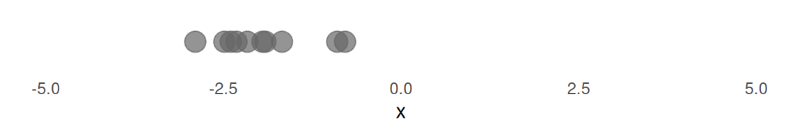
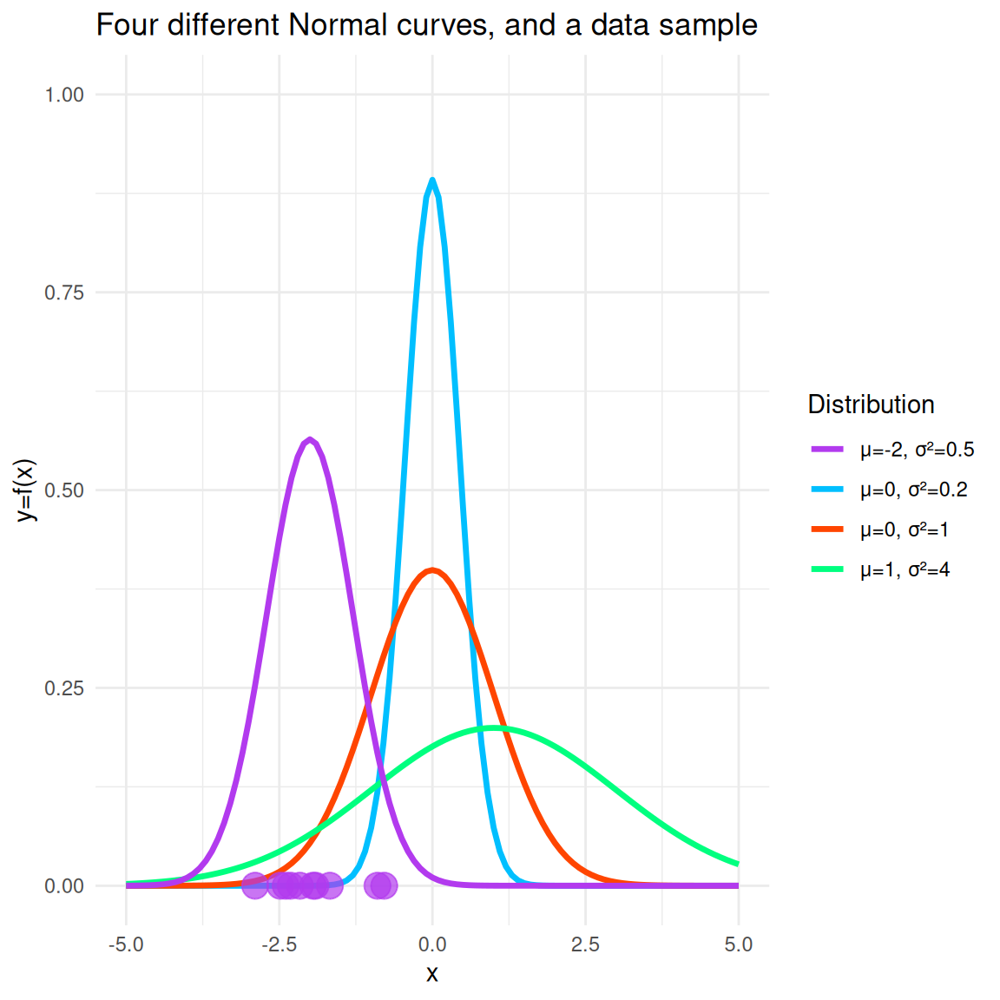
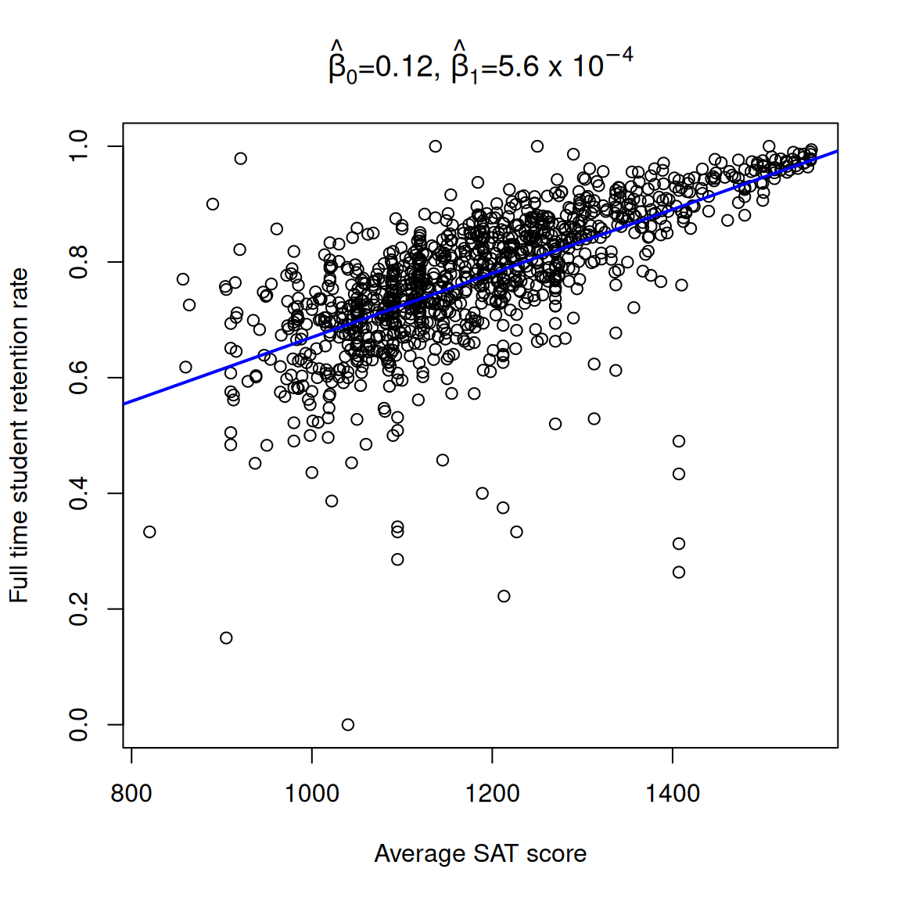
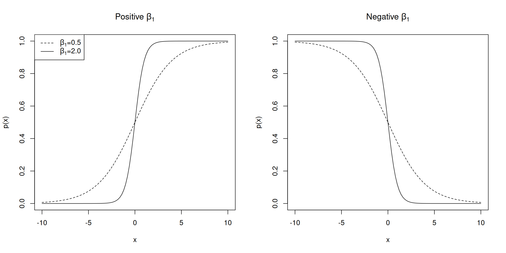
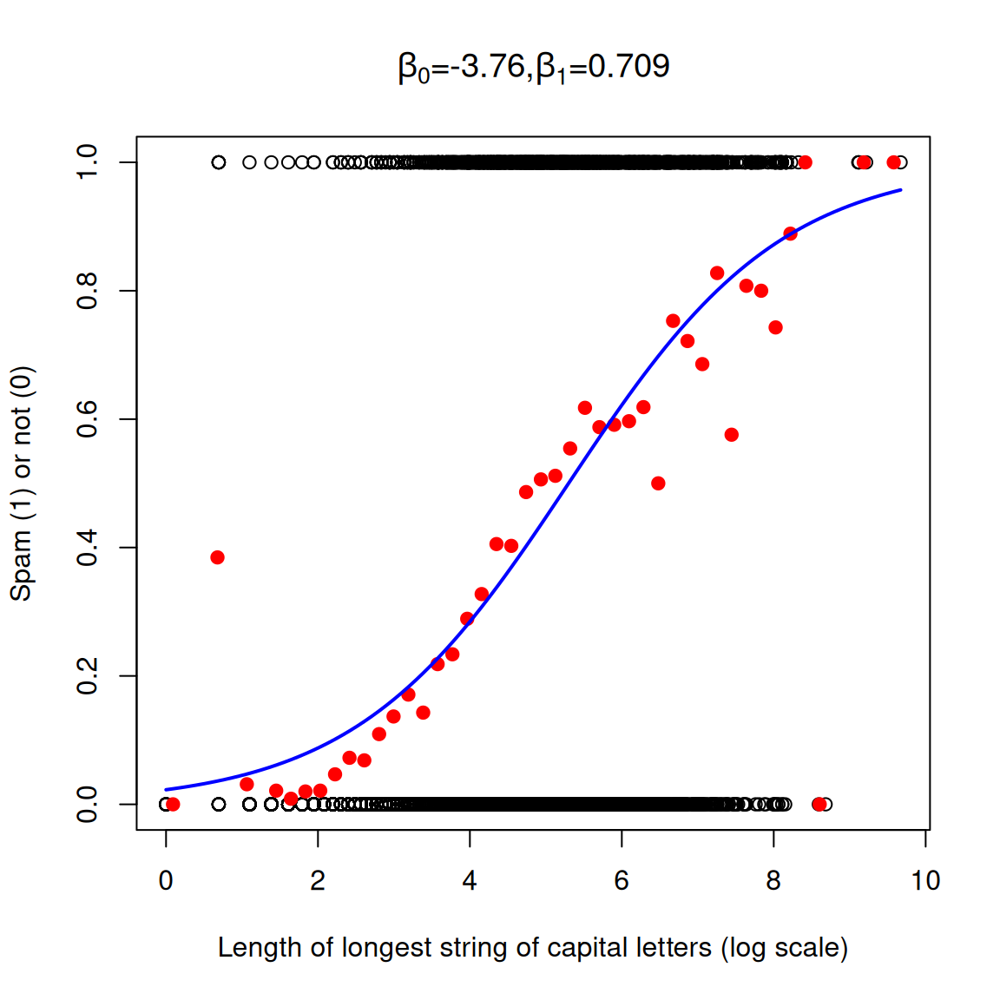

Creating Estimators with MLE
Corresponding reading
Note
These lecture notes weave in material from Shobhana Stoyanov’s lecture notes from Spring 2026, Lecture 10. You are welcome to look at her material directly as well.
Questions/Goals for this Module
Learn about a principled way to get an estimator when we are facing a new problem
- What is the likelihood of the observed data?
- What is a Maximum Likelihood Estimator (MLE)?
- How do you calculate the MLE for a parameter?
- How it is used for linear regression?
- Introduction to logistic regression for binary response
Introduction
How do we estimate something? We can make up estimators, like the mean of the sample, which can seem reasonable. But what is a principled way to get an estimator when we are facing a new (and harder) problem?
Maximum Likelihood Estimation is a rather general and very useful method for estimating parameters. The estimators found by this method (called MLEs) have useful statistical properties, which we will get to, which is why this method is widely used.
In maximum likelihood estimation, as the name suggests, we pick parameters that are most likely to have resulted in our observed sample. That is, we have a data sample and a probability model (some particular family of probability distributions) in mind that we believe generated this data sample. We need to decide what probability model we would use based on other considerations, perhaps field knowledge or visualizations of the data.
Then we have to estimate the parameter values for our probability model that maximize the likelihood that the model produced the observed sample. The following example is reproduced from Kerns (2017), using a different random sample.
Example In this example, we can see the basic idea behind maximum likelihood estimation. Say we have an observed data sample from some process.
We have strong reason to believe that the generating probability model is a Normal distribution, but we do not know the parameters. Let’s look at a picture with four possible distributions from a Normal family. When we superimpose the points, we see that the most likely distribution it could have come from is the purple one, so now the points are shaded purple instead of gray.

The idea is that we would do this quantitatively over all possible Normal distributions to find the particular parameters that maximize the probability of seeing these data points.
Basic Setup
Suppose we choose to model our data \(X_1, \ldots, X_n\) as coming come from some probability distribution with unknown parameter \(\theta\). Let \(f(\cdot \vert \theta)\), be the PMF (for discrete \(X\)) or PDF (for continuous \(X\)) of the distribution. We have the observed values of this sample: \(X_1 = x_1, \ldots, X_n = x_n\). The joint density (or probability for discrete \(X\)) of these specific observed values values is \[f(x_1, x_2, \ldots, x_n \vert \theta)\] i.e. a function of the \(x\), for any particular \(\theta\). If our \(X_i\) are discrete, for example, then \(f(x_1, x_2, \ldots, x_n \vert \theta)\) is the probability of observing these values; but it’s still a function that takes in any possible values.
Instead, we want to turn this function around, think that for our observed values \(x_1, x_2, \ldots, x_n\), it’s a function of \(\theta\), and we want to figure out what value of \(\theta\) makes it large.
When we consider this as a function of \(\theta\), that we call the likelihood of \(\theta\): \[ \ell(\theta) = f(x_1, x_2, \ldots, x_n \vert \theta) \] It’s the same function, but we are now considering \(\theta\) as the variable that varies.
Note
It is worth emphasizing that even though \(\ell(\theta) = \ell(\theta\vert x_1, x_2, \ldots, x_n)\) is equal to \(f(x_1, x_2, \ldots, x_n \vert \theta)\) in value, we think about \(\ell(\cdot)\) as a function of the variable \(\theta\) for fixed \(x_1, x_2, \ldots, x_n\), and the second \(f(\cdot)\), as a PDF (or PMF), which is a function of the \(x_i\) for some fixed parameter \(\theta\).
And they have different properties. For example, for a continuous distribution, a density \(f\) must integrate to 1 as a function of \(x\). But as a function of \(\theta\), \(\ell(\theta)\) will not generally integrate to 1. Similarly, the domain of the functions are different. For example, if \(f(x)\) is a PMF of a random variable like Bernouilli, it takes as input only discrete values \(x\in \{0,1\}\), while \(\ell(\theta)\) is defined for \(0\leq \theta\leq 1\), i.e. continuous valued \(\theta\).
Then, a maximum likelihood estimator of \(\theta\) is any value of \(\theta\) that maximizes the likelihood. For discrete \(X_i\), it maximizes the probability of seeing the observed data.
Definition of the MLE: We say that \(\hat{\theta} = \hat\theta(X_1, \ldots, X_n)\) is a maximum likelihood estimator if \(\ell(\hat\theta) = \ell(\hat\theta \vert X_1, \dots, X_n)\ge \ell(\theta \vert X_1, \dots, X_n)\) for all \(\theta\). That is, \(\ell(\hat\theta \vert X_1, \dots, X_n)\) achieves its maximum value at \(\hat{\theta}\).
Notice that the MLE of \(\hat{\theta}\) is not required to be unique; their could potentially be multiple values of \(\theta\) that result in the maximimum value of \(\ell(\theta)\).
Log-likelihood As we will see, we will often work with the \(\log\) of the likelihood, \(L(\theta)=\log \ell(\theta)\). Maximizing the log of the likelihood is equivalent to maximizing the likelihood (why?).
CautionNotation
The notation of what letter to use for likelihood versus log-likelihood is not fixed. You will see \(\ell(\cdot)\), \(L(\cdot)\), \(\mathcal{L}(\cdot)\), \(lik(\cdot)\), … all used for one of the likelihood or the log-likelihood depending on the author’s pleasure. Indeed, the Rice book and the Agresti & Kateri use opposite notation! I am following Agresti & Kateri since it is our main textbook.
Similarly, \(X_1,\ldots, X_n\) are the random variables while \(x_1,\ldots,x_n\) are the realizations. So for any particular \(x_1,\ldots,x_n\) we can maximize the likelihood \[\ell(\theta) = f(x_1, x_2, \ldots, x_n \vert \theta)\] and get the estimate of \(\theta\) for that observed data. But if we think about this as a general algorithm for finding the maximum likelihood estimator, we can write \[\ell(\theta) = f(X_1, X_2, \ldots, X_n \vert \theta)\] and the resulting \(\hat\theta=\hat\theta(X_1, X_2, \ldots, X_n)\) is an estimator for \(\theta\). While the density or pmf function is always written as \(f(x_1,\ldots,x_n|\theta)\), i.e. in terms of lower case \(x\), the likelihood can be seen both ways depending on how it’s being used. This isn’t an important distinction to worry about too much while you’re doing calculations.
Independent samples
Notice we’ve made no assumption in our model about independence of our data. We don’t have to! So long-as we can write down the joint density or PMF of our data, everything holds. However, the problem simplifies when we choose to model the \(X_i\) as being independent of each other. If each \(X_i \sim f_i(x|\theta)\), then the joint likelihood \(f(x_1, x_2, \ldots, x_n \vert \theta)\) simplifies to
\[ f(x_1, x_2, \ldots, x_n \vert \theta) = \prod_{i=1}^n f_i(x_i \vert \theta) \] This means we have our likelihood and log-likelihood functions as: \[\begin{align} \ell(\theta)=&\prod_{i=1}^n f_i(x_i \vert \theta)\\ L(\theta)=\log\ell(\theta)=&\sum_{i=1}^n \log f_i(x_i \vert \theta) \end{align}\]
Notice how taking the log makes the equation we are trying to maximize a sum versus a product. This is much easier to work with (as well as being more numerically stable to evaluate).
TipIn Summary
Finding a MLE consists of the following steps:
- Choosing a parametric model for the data
- Writing down the (log) likelihood for the data
- Finding the value of \(\theta\) that maximizes the likelihood (using either calculus or a computer)
Simple Examples – One Parameter families.
Let’s see how we might solve for the maximizing \(\theta\) in some simple cases, where \(\theta\in R\), meaning there is only a single parameter.
Caution
We used \(\theta\) for our parameter in the general setting, but when we work with specific parametric models, we will use the “standard” notation for the parameter(s). It’s important to be flexible!
Binary Data – the Bernoulli distribution
- Our Model Return to our example of binary response data \(X_1, \ldots, X_n\), meaning each \(X_i\) takes on two values, either 0 or 1. We decide to model them as independent and we are going to assume they all have same probability \(\pi\in(0,1)\) of being \(1\). Putting this together we can write this as a probability model,
\[X_1, \ldots, X_n \text{ i.i.d}, X_i \sim Bernoulli(\pi)\].
Note
This is “the” standard starting model for binary data – and binary data are really common, since we are often interested in the chance two possible outcomes. But there are strong assumptions here. First is independence, as we’ve mentioned. The second is that all \(X_i\) have the same probability \(\pi\) of being \(1\). We frequently find in real data settings that this is a poor assumption – even if the two groups do have a generally shared probability of an outcome, individual people often have variability in their response. Other distributions, like the negative binomial model this (and introduce another parameter to do so!). Importantly, using a negative binomial model instead of a Bernouli model can have a large impact when we get to later sections about how confident we are in our estimate because we’ve introduced more uncertainty in estimating their shared probability by not assuming every individual has exactly the same probability.
- Writing down the (log) likelihood Recall that the PMF of a Bernoulli is given by \[ f(x)=P(X=x) = \begin{cases} \pi^x\,(1-\pi)^{1-x} \quad & x= 0,1\\ 0 \quad & \mathrm{ otherwise} \end{cases} \]
Note that \(x\) just takes two values \(0\) and \(1\), and our parameter is \(\pi\), with \(0\le\pi\le 1\). The joint probability that \(X_1 = x_1, \ldots, X_n = x_n\) is given by \(P(X_1 = x_1, \ldots, X_n = x_n)\). We use the independence of the \(X_i\) to write: \[\begin{aligned} P(X_1 = x_1, \ldots, X_n = x_n) &= P(X_1 = x_1)\times P(X_2 = x_2) \times \ldots\times P(X_n = x_n) \\ &=\pi^{x_1}\,(1-\pi)^{1-x_1}\times\pi^{x_2}\,(1-\pi)^{1-x_2}\times \ldots\pi^{x_n}\,(1-\pi)^{1-x_n}. \end{aligned}\] Collecting all the \(\pi\) terms and \(1-\pi\) terms we get: \[\begin{aligned} \ell(\pi) &= f(x_1, x_2, \ldots, x_n \vert \pi) \\ &= P(X_1 = x_1, \ldots, X_n = x_n\vert \pi) \\ &= \pi^{x_1+x_2+\ldots +x_n}(1-\pi)^{1-x_1 +1-x_2 + \ldots + 1-x_n}\\ &= \pi^{\sum_{i=1}^n x_i} (1-\pi)^{n-\sum_{i=1}^n x_i},\\ \end{aligned} \]
- Maximizing the likelihood If we maximize this quantity (with respect to \(\pi\)), then we are maximizing the probability of seeing this particular observed data sample. As we suggested above, the likelihood is kind of complicated to maximize, so we will take the (natural) log of the likelihood and maximize that instead. Since \(\log(x)\) is a monotonic function of \(x\), maximizing the logarithm of the likelihood will be equivalent to maximizing the likelihood itself.
Define \(L(\pi) = \log(\ell(\pi))\). Now we have: \[ L(\pi) = \log(\ell(\pi)) = \left(\sum_{i=1}^n x_i \right) \log(\pi) + (n-\sum_{i=1}^n x_i)\log(1-\pi). \]
Since we want to maximize \(L(\pi)\) with respect to \(\pi\), we differentiate it w.r.t \(\pi\): \[ \dfrac{dL(\pi)}{d\pi} = \frac{x}{\pi} - \frac{(n-x)}{1- \pi}. \] Setting this equal to 0 and solving for \(\pi\) gives us that the maximizing \(\pi\) is given by \(\dfrac{x}{n} = \dfrac{\sum_{i=1}^n x_i}{n} = \bar{x}\) (assuming that \(\pi\) is not \(0\) or \(1\)). You can check that this is indeed a maximum by doing the first or second derivative test.
The maximum likelihood estimate for \(\pi\) is given by \(\frac{1}{n}\sum_{i=1}^n x_i\). The corresponding estimator \(\hat{\pi}\) is given by: \[ \hat{\pi} = \frac{1}{n}\sum_{i=1}^n X_i = \bar{X}. \] \(\hat{\pi}\) is called the maximum likelihood estimator of \(p\). Notice it is the standard common estimate that we introduced before.
Example Suppose that we have \(n=5\) and our observed values are \(0, 0, 1, 0, 1\). Then \(\ell(\pi) = \pi^2 (1- \pi)^3\), and the maximum likelihood estimate for \(\pi\) is given by \(\hat\pi = \dfrac{2}{5}\).
Exercise/Question
Did it matter which category I assign to \(1\) versus \(0\) when setting up my model? How would it change if I flipped them around?
Let’s consider some more examples.
Count Data – the Poisson distribution
Our Model Suppose we have count response data \(X_1, \ldots, X_n\), like our website traffic example. A common model for count data is the Poisson with. We will also assume our data are independent with the same parameter \(\lambda\), though remember for the website data our concerns about this assumption. (There are models that give flexibility in \(\lambda\) being different, and with the same effect on our confidence in our estimator as with the Bernoulli)
Writing the (log) likelihood Recall that the PMF of a \(Poisson(\lambda)\) distribution is \[f(x) = P(X=x) = \dfrac{\lambda^x e^{-\lambda}}{x!},\] where \(x = 0, 1, 2, \ldots\).
If \(X_1 = x_1, \ldots, X_n=x_n\) independent, then the joint PMF is the product of the marginals. This gives the likelihood as \[ \ell(\lambda) = \dfrac{\lambda^{x_1} e^{-\lambda}}{x_1!}\cdot \dfrac{\lambda^{x_2} e^{-\lambda}}{x_2!}\dots \dfrac{\lambda^{x_n} e^{-\lambda}}{x_n!} = \dfrac{\lambda^{\sum_{i=1}^n x_i} e^{-n\lambda}}{x_1!x_2!\ldots x_n!} \] Taking logs, we get that \[ L(\lambda) = \left(\sum_{i=1}^n x_i\right)\log(\lambda) -n\lambda -log(x_1!x_2!\ldots x_n!). \] 3. Maximizing the likelihood We can ignore/drop the last term as is since it does not contain \(\lambda\) and when we differentiate with respect to \(\lambda\), its derivative will be \(0\). This implies that: \[ \dfrac{dL(\lambda)}{d\lambda} = \dfrac{\sum_{i=1}^n}{\lambda} -n \Rightarrow \hat\lambda = \dfrac{\sum_{i=1}^nx_i}{n} = \bar{x}. \]
Again, the maximum likelihood estimate is \(\hat\lambda = \bar{x}\), i.e. for this particular data, and generalizing this to any data gives us the corresponding statistic is \(\hat\lambda = \bar{X}\).
Example Suppose \(n=3\) and our observed values are \(5, 2, 3\). Then the MLE is given by the average of these numbers, which is 3.33.
Exercise/Question
Compute the maximum likelihood estimators for parameters of the:
- Exponential(\(\lambda\)), and
- Uniform(\(0, b\)) distributions.
Check your work for Exponential
Assume we choose to model our data \(X_1, \dots, X_n\) as coming from independent Exponential distributions, with a shared parameter \(\lambda\), \[X_i \stackrel{i.i.d.}{\sim} Exponential(\lambda)\]:
\[\begin{align*} L(\lambda) &= \log\ell(\lambda)\\ &= \log\left(\lambda^n e^{-\lambda n \overline{X}}\right)\\ &= n \log \lambda - \lambda n \overline{X} \\ \Rightarrow \dfrac{dl}{d\lambda} &= \dfrac{n}{\lambda} - n \overline{X}\\ \Rightarrow \hat\lambda &= \dfrac{1}{\overline{X}} \end{align*}\]
MLE with multiple parameters
Normal
What about the most common distribution in all of statistics – the normal distribution? Well, it’s actually a bit more complicated because the normal has two parameters, the mean and variance. What do I do?
Well, the steps for getting an MLE remain the same, only now my \(\theta\) parameter is a vector in \(R^2\): \[\theta=(\beta_0,\sigma^2)^T\]
Note
Notice I am considering my parameter to be the variance (\(\sigma^2\)) and not standard deviation \(\sigma\). This distinction becomes pretty important we are taking derivatives – we take the derivative with respect to \(\sigma^2\) and not with respect to \(\sigma\). We could call our variance something different, like \(\psi=\sigma^2\) – and you can do that if that helps you remember – but it is ubiquitous in statistics that we use \(\sigma^2\) and just remember. We will see below when we talk about estimating functions of parameters, that in fact, this is a choice that makes our computations easier, but doesn’t change the end answer!
Choose the parametric model I haven’t given a clear data example, so for now you will just have to accept that we are working with a normal distribution. I’m going to further tell you that we will assume they \(X_i\) are independent. You see how quickly we get lazy and stop thinking about our assumptions and just dive in…
Write down the (log)likelihood The pdf of a normal distribution \(N(\mu,\sigma^2)\) is given by \[f(x_i)=\frac{1}{2\pi\sqrt{\sigma^2}} \exp{\left\{-\frac{(x_i-\mu)^2}{2\sigma^2}\right\}}.\] Because of my independence assumption, we have \[\ell(\theta)=\prod_{i=1}^n \frac{1}{2\pi\sqrt{\sigma^2}} \exp{\left\{-\frac{(x_i-\mu)^2}{2\sigma^2}\right\}} \] To maximize the likelihood we will work with the log-likelihood of \(X_i\) \[\log f(x_i|\theta)=-\log(2\pi)-1/2\log(\sigma^2) -\frac{(x_i-\mu)^2}{2\sigma^2}\] which gives us \[ \begin{aligned} L(\theta)&=-\sum_{i=1}^n \left\{\frac{(x_i-\mu)^2}{2\sigma^2} +\log(2\pi)+1/2\log\sigma^2\right\}\\ &=-\frac{1}{2\sigma^2}\sum_{i=1}^n(x_i-\mu)^2 -\frac{n}{2}\log\sigma^2 - n\log(2\pi) \end{aligned} \] Again, the last term (\(n\log(2\pi)\)) won’t matter since it doesn’t involve any of our parameters.
Maximize your likelihood: Now we have to maximize the likelihood, but simultaneously over both of our parameters. You should review your calculus to remind yourself of how (and why!) this works, but the basic steps are to
- take the partial derivatives of \(L(\theta)\) with respect to each parameter.
- Set each equal to zero. This should give you a system of 2 equations.
- Find the solutions that simultaneously solve the system of equations.
- Check that they are a global maximum (we will not belabor this point too much)
Let’s do this in the case of simple regression, \[ \begin{aligned} \frac{dL(\theta)}{d\mu}=&\frac{1}{2\sigma^2}\sum_{i=1}^n2(x_i-\mu)&=0\\ &\Rightarrow\frac{1}{\sigma^2}(n\bar{x}-n\mu)&=0\\ \frac{dL(\theta)}{d\sigma^2}=&\frac{1}{2(\sigma^2)^2}\sum_{i=1}^n(x_i-\mu)^2 -\frac{n}{2}\frac{1}{\sigma^2}&=0 \end{aligned} \] Notice that for the first equation, the solution is independent of \(\sigma^2\), i.e. we just need to solve \[\bar{x}-\mu=0,\] which gives us our estimator, \[\hat{\mu}=\bar{X}\] That is handy, and we can now subtitute this value in for \(\mu\) in our second equation to get \[ \begin{gathered}\frac{1}{2(\sigma^2)^2}\sum_{i=1}^n(x_i-\bar{x})^2 -\frac{n}{2}\frac{1}{\sigma^2}=0\\ \Rightarrow \sigma^2=\frac{1}{n}\sum_{i=1}^n (x_i-\bar{x})^2 \end{gathered}\] This gives our estimator, \[\hat{\sigma}^2=\frac{1}{n}\sum_{i=1}^n (X_i-\bar{X})^2\]
Simple Regression
These are pretty simple examples, and we are basically doing nothing more than estimating a mean (or the reciprocal of the mean). Not surprisingly, the MLE tells us in each case to use the mean of the data!
But let’s consider our simple linear regression setting, with our all parametric modeling assumptions: \[Y_1,\ldots,Y_n\text{ independent; each } Y_i|X_i\sim N(\beta_0+\beta_1 X_i,\sigma^2)\] We’ve added another parameter here so we have that \[\theta=(\beta_0,\beta_1,\sigma^2)^T.\]
Choose a parametric model. Done already! We have a model for the data \(Y_1,\ldots,Y_n\). Since we’re conditioning on the \(X\), I get to treat the \(X_i\) as fixed values. Notice we’ve chosen the model where not only are the \(Y_i\) all independent, but also all have the same variance!
Write down the likelihood
We’ve actually done most of the work already – we just need to replace \(\mu\) with \(\beta_0+\beta_1 X_i\), \[ \begin{aligned} L(\theta)&=-\frac{1}{2\sigma^2}\sum_{i=1}^n(y_i-\beta_0-\beta_1x_i)^2 -\frac{n}{2}\log\sigma^2 - n\log(2\pi) \end{aligned} \]Maximize the likelihood This get’s a little bit more messy, but still totally manageable, \[ \begin{aligned} \frac{dL(\theta)}{d\beta_0}=&\frac{1}{\sigma^2}\sum_{i=1}^n(y_i-\beta_0-\beta_1x_i)&=0 \\ \frac{dL(\theta)}{d\beta_1}=&\frac{1}{\sigma^2}\sum_{i=1}^n(y_i-\beta_0-\beta_1x_i)x_i&=0\\ \frac{dL(\theta)}{d\sigma^2}=&\frac{1}{2(\sigma^2)^2}\sum_{i=1}^n(y_i-\beta_0-\beta_1x_i)^2 -\frac{n}{2}\frac{1}{\sigma^2}&=0 \end{aligned} \] Importantly, we again don’t need \(\sigma^2\) for the first two equations, which simplify to \[\begin{aligned} \sum_{i=1}^n(y_i-\beta_0-\beta_1x_i)&=0 \\ \sum_{i=1}^n(y_i-\beta_0-\beta_1x_i)x_i&=0\\ \end{aligned} \] Sorting this out gives us estimators, \[\hat{\beta}_0=\bar{Y} - \hat\beta_1\bar{X}, \hat{\beta}_1=\frac{\frac{1}{n}\sum_{i=1}^n(X_i-\bar{X})(Y_i-\bar{Y})}{\frac{1}{n}\sum_{i=1}^n(X_i-\bar{X})^2} \] And then plugging those into our last equation involving \(\sigma^2\) and solving for \(\sigma^2\) gives us \[\hat{\sigma}^2=\frac{1}{n}\sum_{i=1}^n(y_i-\hat{\beta}_0-\hat{\beta}_1X_i)^2\]
Note
The addition of \(\frac{1}{n}\) on the numerator and denominator in my definition of \(\hat{\beta}_1\) is clearly not necessarily – they cancel out. But it can be nice to have them, because then you see that the denominator is the estimate of the variance in the \(X_1,\ldots,X_n\) data, while the numerator is the average of multiplying the distance of \(X_i\) from its mean with to the distance of \(Y_i\) from its mean. Clearly the expression for \(\hat\beta_1\) will have a larger absolute numerator when \(Y_i\) deviates from its mean at the same time that \(X_i\) deviates from its mean.
We can apply this to our college data:

Exercise/Question
Work through the details above and to show \(\hat{\beta}_0\) and \(\hat{\beta}_1\) are as I gave above.
Check your work
Let’s expand out the LHS of the equations here. Remember that we always have \(n\bar{x}= \sum_{i}x_i\), a common trick in computations
\[\begin{aligned} \sum_{i=1}^n(y_i-\beta_0-\beta_1x_i)&=n(\bar{y}-\beta_0-\beta_1\bar{x})=0\\ \Rightarrow\beta_0&=\bar{y}-\beta_1\bar{x} \\ \sum_{i=1}^n(y_i-\beta_0-\beta_1x_i)x_i&=\sum_i y_ix_i-n\beta_0\bar{x}-\beta_1\sum_i x_i^2\\ &=\sum_i y_ix_i-\beta_1\sum_i x_i^2-n(\bar{y}-\beta_1\bar{x})\bar{x}\\ &=\sum_i y_ix_i-n\bar{y}\bar{x} -\beta_1(\sum_i x_i^2-n\bar{x}^2)=0\\ \Rightarrow \beta_1&=\frac{\sum_i y_ix_i-n\bar{y}\bar{x}}{\sum_i x_i^2-n\bar{x}^2} \end{aligned} \]
How does this equal what I gave above? Well, it’s simply an alternative expression of these quantities. These are important tricks working with data with the mean subtracted off – basically when you sum the square, the cross product term combines with other terms: \[ \begin{aligned} \sum_i (x_i-\bar{x})^2&=\sum_i (x_i^2-2x_i\bar{x}+\bar{x}^2)\\ &=\sum_i x_i^2-2\bar{x}\sum_i x_i+ \sum_i \bar{x}^2\\ &=\sum_i x_i^2-2\bar{x}n(\bar{x})+ n\bar{x}^2\\ &=\sum_i x_i^2-n\bar{x}^2\\ &=\sum_i (x_i^2-\bar{x}^2) \end{aligned} \]
You can do the same trick with the numerator.Exercise/Question
Consider our case of two groups that we briefly discussed as a special case of regression, \[Y |X \sim \begin{cases} N(\alpha_1,\sigma_1^2), & X=1\\ N(\alpha_0,\sigma_0^2), & X=0 \end{cases} \] Show that the maximum likelihood estimators of these parameters is:
You can simplify your work by setting your notation by assuming \(Y_1,\ldots,Y_{n_0}\) are the \(Y\) values for which \(X=0\) and \(Y_{n_0+1},\ldots,Y_{n_0+n_1}\) are the \(Y\) values for which \(X=1\), so there are \(n_0\) values with \(X=0\) and \(n_1\) values with \(X=1\).
Non Analytical Solutions
Logistic Regression
In the cases above, all of the solutions can be found by hand via calculus. But consider our example of regression when we instead had \(Y_i\) being binary, taking 0 or 1, so that \[E(Y_i |X)=P(Y_i=1 | X)\] Let’s see how the MLE works out here
- Choosing a parametric model We said we could assume \(Y|X\) is Bernoulli, with probability \(\pi\) given by \(\pi=f(X)\). But we need to assign a model for \(f\). Unlike linear regression, since we need the range of \(f(X)\) to be between \((0,1)\), we don’t want to just set \[P(Y_i=1 | X_i)= \beta_0+\beta_1X_i\] But we could pick another equation. A common choice is the logistic function sometimes called the sigmoid function: \[p(x)=\frac{1}{1+e^{-(\beta_0+\beta_1 x)}}=\frac{e^{\beta_0+\beta_1 x}}{1+e^{\beta_0+\beta_1 x}}\]
This is a mouthful, for sure, but if you look at this figure, you can see that this makes sense for making sure our probability is between 0 and 1

Not only is our probability between \(0\) and \(1\), but we see the probability increases with \(x\) if \(\beta_1>0\) and visa versa if \(\beta_1<0\). And the size of \(\beta_1\) controls the rate at which the probability changes.
This choice of \(p(x)\) for modeling \(P(Y=1|X)\) is often called logistic regression. For a non-technical introduction to logistic regression modeling, see Chapter 7 of my online book written for STAT 131A.
Note
In fact, inverting \(p(x)\) shows that you have, \[log\left(\frac{p(x)}{1-p(x)}\right)=\beta_0+\beta_1 x\] The left-hand side of this equation is called the log-odds of \(p(x)\).
When we write it like this, we see there is a linear relationship to \(x\), it’s just a linear relationship with a function of \(E(Y|X)\). This is a common way to extend the simple linear regression to other distributions, and common choices exist for other distributions and this strategy is called generalized linear models (GLMs).
How in the world do we estimate the \(\beta_0\) and \(\beta_1\)? Well, this is where the MLE becomes awfully handy. We have a process for that. Moreover, we’ve done this work already for our simple Bernoulli example from before, so we can just plug \(p(x_i)\) into it, just like we did with linear regression for the normal case.
Write down the likelihood Previously, for a Bernoulli with a shared parameter \(p\), we could write the individual pmf as, \[\begin{aligned} f(y_i)&=p^{y_i}\,(1-p)^{1-y_i}\\ \log f(y_i)&=y_i\log(p)+(1-y_i)\log(1-p) \end{aligned}\] Now I just need to replace \(p\) with \(p(x_i)\), \[\log f(y_i)=y_i\log(p(x_i))+(1-y_i)\log(1-p(x_i))\] Again we have (again) assumed independence, we have the joint log-likelihood, \[\begin{aligned} L(\theta)&=\sum_{i=1}^n\log f(y_i)\\ &=\sum_{i=1}^n y_i\log p(x_i)+\sum_{i=1}^n(1-y_i)\log(1-p(x_i))\\ \end{aligned}.\] This hides our actual parameters we want to estimate; to see them we need to substitute in \(\frac{1}{1+e^{-(\beta_0+\beta_1 x_i)}}\) everywhere I have \(p(x_i)\), \[\begin{aligned}L(\theta)&=L(\beta_0,\beta_1)\\ &=\sum_{i=1}^n y_i\log \frac{1}{1+e^{-(\beta_0+\beta_1 x_i)}}+\sum_{i=1}^n(1-y_i)\log(1-\frac{1}{1+e^{-(\beta_0+\beta_1 x_i)}})\\ &=\sum_{i=1}^n y_i\log \frac{1}{1+e^{-(\beta_0+\beta_1 x_i)}}+\sum_{i=1}^n(1-y_i)\log(\frac{-e^{-(\beta_0+\beta_1 x_i)}}{1+e^{-(\beta_0+\beta_1 x_i)}}) \end{aligned}\]
Maximize the likelihood Now, if you’re looking at that equation and thinking “Oh no, I don’t want to even think about calculating the partial derivatives of that,” you are in luck (though the chain rule can make quick work of the calculations). Because, even if we did the calculus we wouldn’t be able to solve the system of equations analytically. But this is the joy of modern computing. We have excellent optimization tools that allow this to be done numerically (remember Newton’s method from calculus?). We won’t be able to write an equation for the estimators \(\hat{\beta}_0\) and \(\hat{\beta}_1\), but we will have an algorithm that will be able to calculate the estimates for any particular dataset \(X_1=x_1,\ldots,X_n=x_n\). Specifically, we will use a computer to the values of \(\beta_0\) and \(\beta_1\) for the following optimization problem: \[\max_{\beta_0,\beta_1} L(\beta_0,\beta_1)= \max_{\beta_0,\beta_1}\sum_{i=1}^n y_i\log \frac{e^{\beta_0+\beta_1 x_i}}{1+e^{\beta_0+\beta_1 x_i}}+\sum_{i=1}^n(1-y_i)\log(\frac{-e^{\beta_0+\beta_1 x_i}}{1+e^{\beta_0+\beta_1 x_i}})\]
We can look at the estimates on our spam data, where again we plot in red the average (i.e. proportion) for different bins of the data. The blue line is \(p(x)\) based on the estimates \(\hat{\beta}_0\) and \(\hat{\beta}_1\) from solving our MLE problem using the R function glm which numerically solves the optimization problem above.
The code in R for this looks like the following:
spam.fit<-glm(y~x,data=spam7, family="binomial")
Estimating a function of Parameter with MLE
So far all of our examples where we used the MLE, what we wanted to estimate was the actual parameter of the parametric model.
But consider the exponential distribution, which was an exercise above. We found a MLE for the rate parameter \(\lambda\), \[\hat\lambda=\frac{1}{\bar{X}}.\] But what if that isn’t what we are interested in, and we want the MLE for the mean of the distribution, let’s call it \(\mu\)? That is given by \[\mu=E(X)=\frac{1}{\lambda}\] But \(\mu\) isn’t part of the density of the exponential… Can we find a MLE for \(\mu\)?
In fact, yes, and there is a very simple solution. If you know the MLE for the parameters of a distribution, and you want the MLE for a function of those parameters, you can just substitute the MLE into the function. So for an exponential, \[\hat{\mu}=\frac{1}{\hat{\lambda}}=\bar{X}\] Which is both simple, and quite logical – you see almost every time, MLE is going to tell you that the best way to estimate the mean of the distribution is the mean of the data, irrespective of the distribution you assume.
Specifically, we have the following Theorem:
Theorem 1 (MLE of functions of \(\theta\)) Let \(\tau = g(\theta)\) be a function of \(\theta\). Let \(\hat\theta\) be the MLE of \(\theta\). Then \(\hat\tau = g(\hat\theta)\) is the MLE of \(\tau\).
Exercise/Question
Consider our Bernoulli example above for when we have binary data \(X_1,\ldots,X_n\). What if instead of estimating the probability of success, \(p\), I want to estimate the log-odds, \[\tau=\log(\frac{p}{1-p})\]
Exercise/Question
Suppose you decided to model your data with the Gamma(\(\alpha, \beta\)) distribution, where \(\beta\) is the rate parameter. In other words, you choose to model \(X_1,\ldots,X_n\) as each being independent with distribution Gamma and shared parameters \(\alpha,\beta\). Since there are two ways to parameterize the Gamma distribution, let’s be specific, and write the density as, \[ f(x)=\frac{\beta^\alpha}{\Gamma(\alpha)}x^{\alpha-1}e^{-\beta x}; \alpha,\beta >0 \] Suppose you had a MLE for \(\alpha\) and \(\beta\), what is \(g\) and what would be the MLE for the mean of the distribution?
Exercise/Question
What characteristics would you want of your data \(X_1,\ldots,X_n\) to make Gamma a good choice for modeling your data?
Proof
The theorem holds for all \(g\), but it’s pretty easy to prove in the case that \(g\) is one-to-one (i.e. invertible). In this case, we could rewrite the density with \(\tau\) the new parameter of the density by replacing \(\theta\) with \(g^{-1}(\tau)\),1, calculate the likelihood \(\ell(\tau)\), and find a \(\tau\) that maximizes it. This would give you the MLE of \(\tau\). This theorem says you don’t need to go through this process, because \(\hat\tau=g(\hat\theta)\) is the MLE of \(\tau\), i.e. maximizes \(\ell(\tau)\).
Let’s assume that \(\hat{\theta}\) is the MLE for \(\theta\), i.e. it is the value \(\theta\) that maximizes \(\ell(\theta)\). Then for for any particular \(\tau_0\), there is a single \(\theta_0=g^{-1}(\tau_0)\) and we can calculate the likelihood of our data using the likelihood with \(\tau_0\) or with \(\theta_0\), and these values will be the same, \[\ell(\tau_0)=\ell(g^{-1}(\tau_0))=\ell(\theta_0)\] So for any particular \(\tau_0\) and corresponding \(\theta_0\), we have \[\ell(\tau_0)=\ell(\underbrace{g^{-1}(\tau_0)}_{\theta_0}) \leq \ell(\hat\theta) \] because of the definition of \(\hat\theta\) as the value that maximizes \(\ell(\theta)\).
But because \(g\) is one-to-one, \(\hat\theta\) corresponds to a unique \(\hat\tau=g(\hat\theta)\) and \[\ell(\hat\theta_n)=\ell(\hat\tau_n)\] so that means \[\ell(\tau_0) \leq \ell(\hat\tau) \] This is true for any \(\tau_0\), so therefore \(\hat\tau = g(\hat{\theta})\) maximizes \(\ell\) over all other possible values of \(\tau\). This means \(\hat\tau\) is the MLE for \(\tau\).
References
Agresti, Alan, and Maria Kateri. 2021. Foundations of Statistics for Data Scientists. Chapman; Hall/CRC.
Kerns, Jonny. 2017. “Probability Concepts Explained: Maximum Likelihood Estimation.” Medium. https://medium.com/data-science/probability-concepts-explained-maximum-likelihood-estimation-c7b4342fdbb1.
Rice, John A. 2006. Mathematical Statistics and Data Analysis. 3rd ed. Duxbury Press.
Footnotes
Note you can do this with parameters. You can’t do this with random variables↩︎